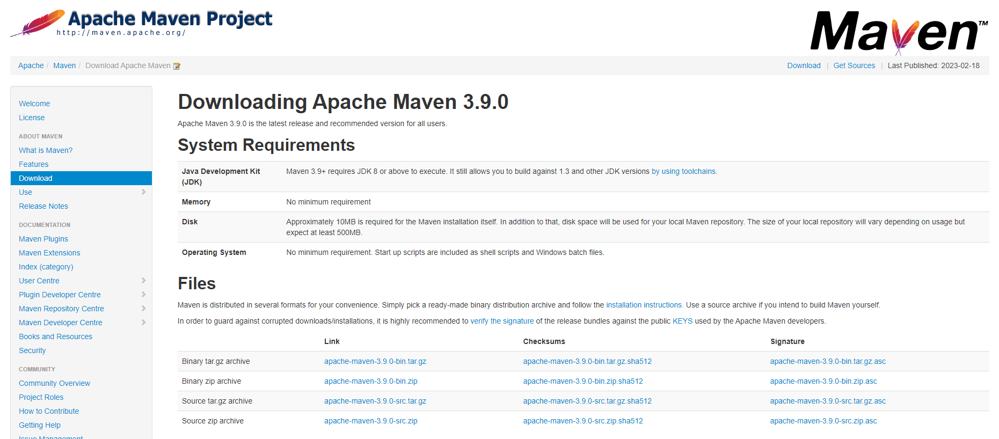
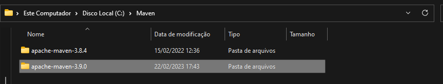
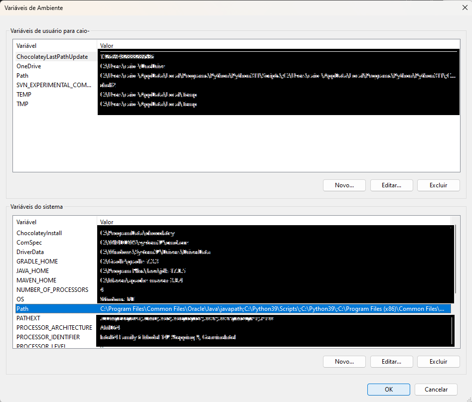
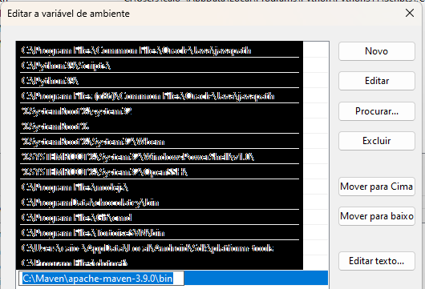
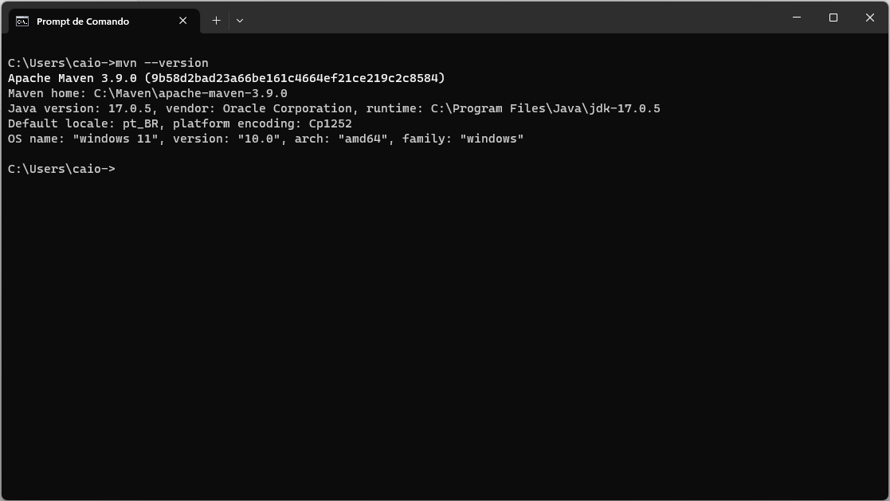
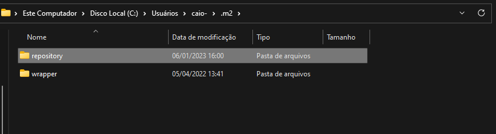

MAVEN
Instalação e Configuração do MAVEN
Instalação dos arquivos binários:
Acesse a página oficial do MAVEN e faça o download dos
arquivos binários.

Após realizar o download dos arquivos, você deve descompactá-los em um local de sua preferência, é importante
frisar que o local onde você descompactar os arquivos, será o local onde o maven ficará instalado.

Configuração de Variáveis de Ambiente:
Agora, vem a parte mais complicada do processo de instalação, é necessário colocar o local onde se encontra o
script de execução do maven nas variavéis de ambiente.
Para fazer isso, você pode pesquisar por "Editar Variváeis de Ambiente do Sistema" no menu iniciar e
então irá aparecer a seguinte janela:

Em seguida, clique na variável "Path" localiza na lista de "Variavéis do Sistema" e depois clique
no botão "Editar". Em seguida, clique no botão "Novo" que está localizado na nova janela que abriu
e adicione o caminho da pasta bin do maven.

Clique em "OK" para fechar a janela "Editar Variáveis do Sistema" e depois a mesma coisa para fechar
a janela "Varivéis do Sistema".
Verificar Instalação do Maven:
Para Verificar se o maven foi instalado com sucesso, abra um terminal (PowerShell ou Prompt) e execute o comando
abaixo:
$ mvn --version
Caso não ocorra nenhum erro, após a aexecução do comando, e retorne o que está na imagem a seguir, significa que o processo de instalação do maven foi realizada com sucesso. 
Gerenciamento de Dependências
Para gerenciar as dependências do nosso projeto, utilizamos o arquivo pom.xml, nele colocamos as informações que o
nosso prjoeto necssita para funcionar e o maven se encarrega do download dessas bibliotecas, adicionando-as no
Build Path/Classpath.
O maven irá buscar por essas dependências em locais chamados "repositórios", exitem, basicamente, dois
repositórios, o repositório local que está localizado na pasta ".m2/repository" (imagem abaixo) e o
repositório remoto que está localizado no repositório público do maven.
Ao adicionar uma nova dependência em nosso projeto, o maven, primeiro realiza a busca em nosso repositório loca,
caso não encontre, irá buscar no repositório remoto e então fazer download da biblioteca, depois disponibilizá-la
no repositório local. Dessa forma, caso você necessita utilizar a mesma biblioteca em outro prjoeto, não será
necessário realizar o downlaod novamente.

Sobre o POM.XML
Podemos dividir o arquivo pom.xml em quatro partes:
A primeira:
Possui as coordenadas do projeto, ou seja, os dados que identificam o projeto, como groupId, artifactId
e version.
<groupId>com.api</groupId>
<artifactId>parking-report</artifactId>
<version>0.0.1-SNAPSHOT</version>
A segunda:
Possui as propriedades do projeto, essa parte contém informações de enconding e a versão
que estamos utilizando.
<properties>
<project.build.sourceEnconding>UTF-8</project.build.sourceEnconding>
<maven.compiler.source>1.7</maven.compiler.source>
<maven.compiler.target>1.7</maven.compiler.target>
</properties>
A terceira:
É onde definimos as dependencias de nosso projeto.
<dependencies>
<dependency>
<groupId>org.springframework.boot</groupId>
<artifactId>spring-boot-starter-validation</artifactId>
</dependency>
<dependencies>
A quarta:
Por úlitmo, temos as informações de build que dizem como o projeto deve ser compiulado pelo maven. Nessa parte,
também estão descritas quais plugins do maven o nosso projeto necessita para ser compilado.
<build>
<plugins>
<plugin>
<groupId>org.springframework.boot</groupId>
<artifactId>spring-boot-maven-plugin</artifactId>
</plugin>
</plugins>
</build>
Adicionando dependências no Projeto
Para adicionarmos uma nova dependência em nosso projeto, basta que no arquivo pom.xml, dentro da tag
dependencies, adicionemos uma nova tag dependency com as informações de groupId, artifactId
e version da biblioteca que queremos adicionar como dependência.
Digamos que vamos desenvolver uma aplicação que realiza requisitções HTTP para alguns serviço na web, então precisamos,
de alguma forma, realizar essas requisitções através do nosso código JAVA. Uma ótima forma de fazer isso, é por
meio da biblioteca Apache HttpClient. Então, para adicionarmos essa biblioteca como dependência em nosso projeto,
temos que adicionar suas informações no nosso arquivo pom.xml:
<dependencies>
<dependency>
<groupId>org.apache.httpcomponents</groupId>
<artifactId>httpclient</artifactId>
<version>4.5.13</version>
</dependency>
</dependencies>
Com isso, o maven irá realizar o download da biblioteca Apache HttpClient e adicioná-la em nosso Build Path/Classpath. Dessa forma, já poderemos utilizá-la em nosso projeto sem mais nenhuma trabalho adicional.